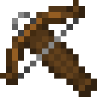
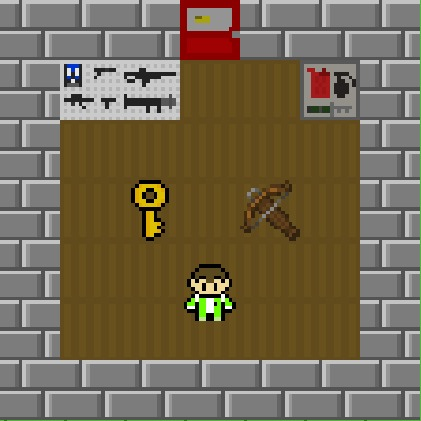
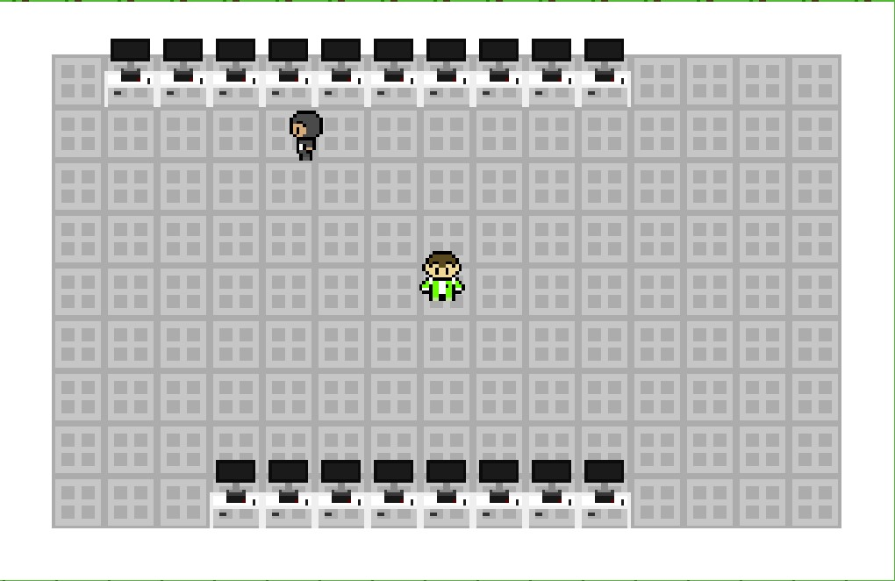

Un día José se despierta en su casa, se dispone a comenzar su día, pero recuerda que sus compañeros (los kavrones de DAW) le dejan regalitos cada vez que se despista.
Se dirige al Ammu-Nation a por un juguetito pero está cerrado (son las 8 de la mañana y vives en Sevilla, no hay nada abierto) y necesita una llave. ¿Dónde estará? La busca y por el camino se cruza con Jaime que, como no tiene FOL, está dando una vuelta. Una vez que José tiene la llave, va hacia la tienda y allí recoge su juguetito y la llave de Ilerna (para echarle una manita a Jesús el guapo).
José llega a clase y… ¡sorpresa! Está Lokito dentro. Por lo que parece lleva un AK-47 en la mochila, así que José tiene que matarlo antes de que acabe con él y sus compañeros. ¿Lo logrará? ¡Está en tus manos!
José es el personaje principal del juego, el que controlas, el cual debe matar a Lokito con su ballesta. Tiene 4 vidas.
Jaime es un NPC que pasea por el mapa, su única función es la de dar ambiente al juego. Aparecen 2 Jaime en el mundo.
Lokito es un enemigo, al cual tendrás que derrotar al final del juego con la ballesta para ganar. Aparece en el Ilerna y tiene 4 vidas. No te acerques mucho a él, ¡te hará daño y te quitará 1 vida!
Necesitarás las llaves para poder entrar al Ammu-Nation y al Ilerna. Cada lugar tiene su llave, la primera que encuentras sirve para entrar en el Ammu-Nation, mientras que la segunda sirve para entrar al Ilerna.
La ballesta es el arma que necesitarás para eliminar a Lokito. No podrás usar la ballesta hasta que la obtengas en el Ammu-Nation.
En esta tienda podrás obtener una ballesta, que te servirá más adelante. Necesitarás la primera llave para poder entrar. Aquí podrás recoger la segunda llave, que te servirá para más adelante.
Al entrar al Ilerna, concretamente a la clase de 1ºDAW, encontrarás al enemigo final, Lokito. Si lo derrotas, ganarás; si te mata, perderás. Necesitarás la segunda llave para poder entrar.
